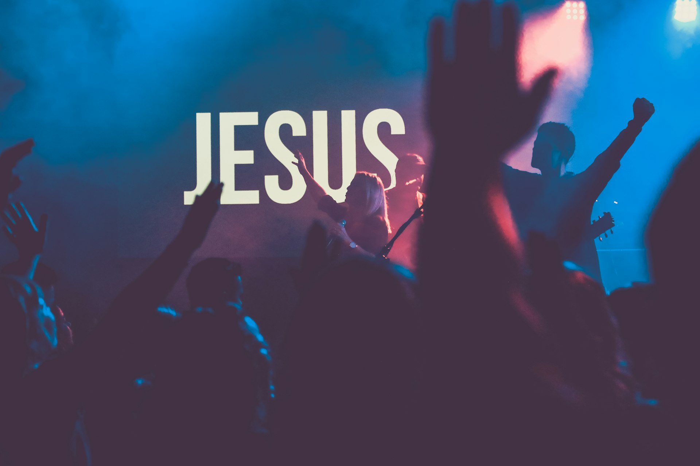

International Central Gospel Church
The Harvest Temple
A vibrant church in Sunyani, Ghana. Raising leaders, shaping vision, and influencing society through Christ.


About
ICGC The Harvest Temple is a remarkable church situated in the heart of Sunyani, Ghana. This spiritual sanctuary stands out for its impressive architecture and the warmth and hospitality of its congregation.
As part of the International Central Gospel Church network under the leadership of Dr. Mensa Otabil, our mission is to raise leaders, shape vision, and influence society through Christ. We are an Evangelical, charismatic Christian church focused on developing an atmosphere where people feel free, safe, loved, and honored.
Inside, the ambiance is peaceful — an ideal place for reflection, worship, and fellowship. On Sundays, our services are filled with uplifting music and powerful preaching that reflects the joyous spirit of our community.

The impact of a faithful community
Worship With Us
Join our vibrant congregation for uplifting worship, powerful preaching, and genuine fellowship every week at The Harvest Temple.
8:00 AM — 11:00 AM
Our flagship worship experience with praise, worship, and the Word of God.
8:00 AM — 11:00 AM
Age-appropriate Bible lessons and activities for our young ones.
6:00 PM — 8:00 PM
Midweek Bible study and prayer for spiritual growth and renewal.
6:00 AM — 7:30 AM
Early morning intercession — there's power in united prayer!
Get Involved
Discover ways to serve, grow, and connect with our church family.
Empowering the next generation to live boldly for Christ through discipleship and fellowship.
A community of women growing in faith, supporting one another, and impacting families.
Building godly men who lead with integrity in their homes, workplaces, and community.
Deep biblical teaching that equips believers with knowledge and practical ministry skills.
An anointed team leading the congregation into the presence of God through music.
Reaching the lost and serving the community through evangelism and humanitarian work.
Prayer
Join believers at The Harvest Temple in prayer meetings that will change your life. We believe in the power of united prayer to transform individuals, families, and our community in Sunyani.
Upcoming Events & Programs
Join us for praise, worship, and the Word every Sunday morning at The Harvest Temple.
Deep dive into Scripture with practical teachings for everyday Christian living.
Our annual gathering — a time of celebration, renewal, and powerful encounters with God.
Ministry Resources
Visit the International Central Gospel Church headquarters website for news and updates.
centralgospel.com →Learn about our General Overseer — theologian, author, and visionary leader.
Read Biography →Watch life-changing messages from ICGC pastors and leaders around the world.
Watch on YouTube →Scriptural music that glorifies Jesus and draws hearts closer to Him.
Listen Now →Daily devotionals and Bible reading plans to strengthen your walk with God.
Start Reading →Support the work of the ministry through tithes, offerings, and special gifts.
Give Now →Visit Us
Whether you're visiting Sunyani or looking for a church home, we'd love to welcome you. Our doors are open to everyone seeking God.
Near Jubilee Park, Sunyani
Bono Region, Ghana
Sunday: 8:00 AM — 11:00 AM
Wednesday: 6:00 PM — 8:00 PM